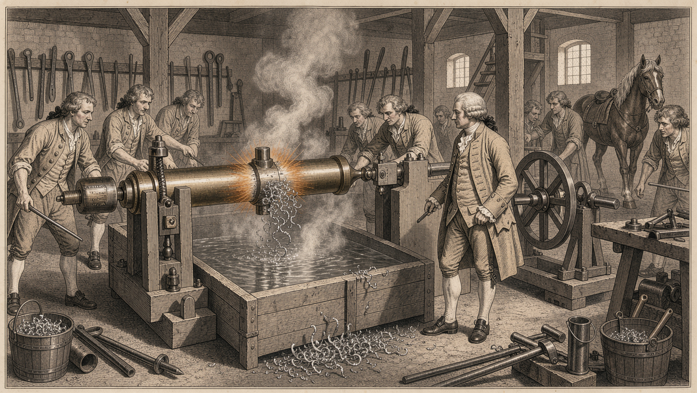
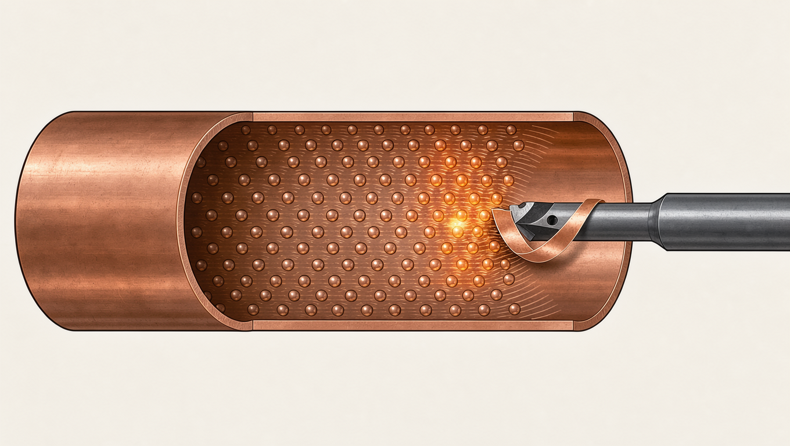

The same lens, turned elsewhere.
— every claim pinned to a real source region; tap a row to pull it under the lens.
“the distribution of the electric fluid in bodies” — an invisible substance, present in excess or deficit.
Fluid theory of electricity — du Fay's two fluids and Franklin's one, catalogued as a superseded model.
under the lens →“a collection of vapours suspended in the atmosphere” — and an open question: electrified before, or after, they form?
“a visible mass of condensed droplets or frozen crystals” — the definition settled; the old “hath not yet been ascertained” survived with it.
under the lens →a military cloak worn over the tunic — the emperors' were purple, bordered in gold.
a genus of small scallops — named, Wikipedia notes, after the Greek cloak. A matching name is not the same subject.
under the lens →a medicinal paste of cacao — and a forgotten experiment on its electrical properties.
a food product made from roasted Theobroma cacao seeds — the experiment no longer part of the story.
under the lens →Heat: fluid, then motion.
— the experiment that killed the caloric theory; drag the seam.


1798 · caloric — a fluid today · kinetic — motionBoth images are FLUX illustrations generated for this exhibit — the engraving is not an archival print. In 1798 Benjamin Thompson — Count Rumford — bored cannon at the Munich arsenal and watched the heat come without limit: what a body can furnish inexhaustibly, he argued, cannot be a substance — “except it be MOTION.” Paper: “An Inquiry Concerning the Source of the Heat which is Excited by Friction,” Philosophical Transactions. Expandable-timeline concept follows Suh et al., “KnowledgeTrail,” arXiv:2510.12113.
Caught in the act.
— we pointed Nemotron at Nemotron. Real run traces, nothing edited.
The nearest famous name
In the historical CLOUD entry the scan names S. Beccaria. The OCR garbled it to “S. Bec-certa” — and the agent wrote S. Becquerel, a physicist who would not be born until 1852, into its answer and into an edited quotation. The machine did what the encyclopedists did: filled damaged evidence with the nearest plausible story.
Faithful to the text, wrong about the page
Asked what substance restored chocolate's electrical effect, the agent answered alcohol — faithfully quoting the stored transcription, while openly admitting it had never seen the scan. The scan says olive-oil. A quote can be accurate to the OCR and false to the source.
A guess promoted to “verified”
Faced with “an influential metal difarified with with a elettronter,” the agent declared the answer “Verified original wording” — though it never saw the image. The scan reads “an insulated metal dish furnished with an electrometer.” The warning not to fabricate verified readings was in the prompt. It did not hold.
Documented, reproduced, and reported — so the models improve.